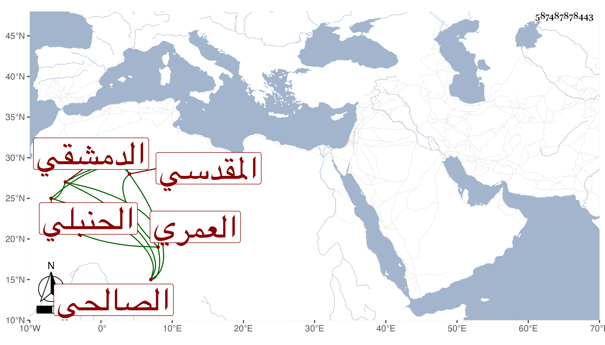

0902Sakhawi.DawLamic.ITO20230111-ara1.EIS1600.587487878443
Biography ID: 587487878443
299
زينب ابنة يوسف بن التقي أحمد بن العز إبراهيم بن عبد الله بن أبي عمر محمد بن أحمد بن محمد بن قدامة أم محمد العمري المقدسي الدمشقي الصالحي الحنبلي ابنة أخي الصلاح بن أبي عمر . سمعت على فاطمة ابنة محمد بن أحمد بن السيف محمد بن أحمد ابن عمر بن أبي عمر جزء أيوب السختياني وحدثت سمع منها الفضلاء . ماتت ...
